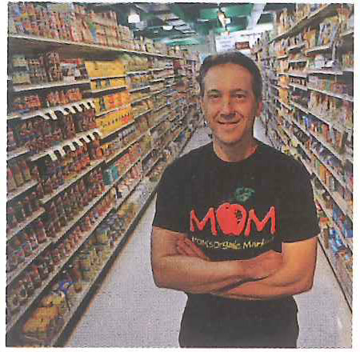
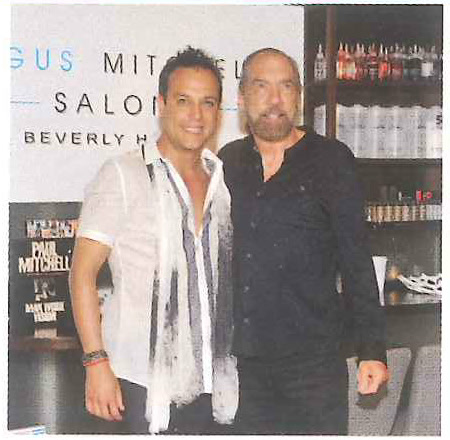
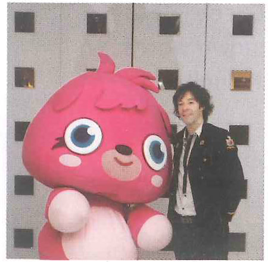

Unit 6: Education (Pages 126-139)
Unit 6 · Education
| Note-Taking | comparing and contrasting multiple topics |
|---|---|
| Listening | listening for contrasting ideas |
| Critical Thinking | ranking options |
| Vocabulary | using the dictionary: formal and informal words |
| Grammar | simple, compound, and complex sentences |
| Pronunciation | highlighted words |
| Speaking | changing the topic |
Is one road to success better than another?
A. Discuss these questions with your classmates.
- What does being successful mean to you?
Sample answer: Being successful means that I accomplish all of my personal goals. - In your life, have you taken a traditional path or a nontraditional path to reach your educational and career goals? What are the advantages and disadvantages of each path?
Sample answer: I have taken a traditional path to success. I work hard, and I am going to school. The advantage to a traditional path is that it has worked for a lot of people for a long time. / I have taken a nontraditional path. I didn’t go to school, and I didn’t have good jobs when I was younger. However, I have become successful because I was given an opportunity later in life. - Look at the photo. What are the people doing? How is teamwork a part of success?
Sample answer: They are climbing a mountain. It is important for people on a team to work together to be successful. It is also important for people on the team to see other people’s strengths and weaknesses. And in situations like this, working well as a team is critical to staying safe!
B. Listen to The Q Classroom online. Then answer these questions.
These expressions aren’t in the printed word lists, but they’re useful for understanding the discussion. Click any phrase to see its definition and an example.
Teacher: “Is one road to success better than another?” Marcus, what do you think? Is there a best road to success?
Marcus: I think that in most cases it’s better to take a nontraditional road. If you have a different kind of experience than other people in your career, then you’ll have a different perspective. You might know things other people don’t know.
Teacher: Good point. What do you think, Sophy, is one road to success better than another?
Sophy: I guess I’d say no, that there are many different ways of reaching your goals. The best way for one person might not be the best for someone else. Maybe a nontraditional road works for Marcus, but a more traditional one works for someone else.
Teacher: What do you think, Felix? Marcus feels it’s best to find your own unique path, and Sophy feels that while that might work for some people, it won’t work for everyone. What do you think?
Felix: I agree with Sophy in the sense that everyone is different and everyone needs to find their own way. But one argument for a more traditional path to success—say, studying hard, getting a degree, getting an entry-level job, and working your way up—is that you gain a lot of work experience along the way. If you take a less traditional path, you might miss out on that valuable work experience.
Teacher: OK. How about you, Yuna? Would you say that one road to success is better than another?
Yuna: No. I agree that there are advantages and disadvantages to every choice.
- Marcus thinks that different experiences give workers different perspectives. What is an example of this kind of nontraditional path to success?
Possible answer: Someone might work as a fashion designer and then decide that they want to teach textiles in a high school. Their experience in the fashion industry would give them unique ideas about sewing. - Felix lists many steps on a traditional road to success: studying hard, getting a degree, getting work experience, getting an entry-level job, and working your way up. Which do you think is the most important step? Why?
Possible answer: I think getting a degree is the most important of the steps that Felix lists because if you don’t have that piece of paper, it can be very hard to get even an entry-level job.
A. Categorize Listen to the class discussion about nontraditional approaches some businesses have taken to success. Complete the chart.
These expressions aren’t in the printed word lists, but they’re useful for understanding the listening. Click any phrase to see its definition and an example.
Professor: OK, so in the reading you did to prepare for this class, you learned about several different businesses that have taken kind of a nontraditional approach to success. In other words, these companies have achieved success without focusing only on making money. Who can tell me about one of the businesses from the chapter you read? Yes, Brian.
Brian: Well, one of the examples was the American ice cream maker, Ben and Jerry’s. The two guys who started the company, Ben and Jerry, were childhood friends. They took a college course in ice cream making, and they opened their first ice cream shop in, um, 1979, I think. What made Ben and Jerry’s different from many other ice cream companies was their focus on charities and their opposition to using any chemicals. They wanted to build a company that had a conscience. They received the US Small Business Persons of the Year award in 1989, and they sold their company in 2000 for a huge profit. They had some problems along the way, though. They were involved in lawsuits with another ice cream company, and they needed help with their business to deal with the fast growth of their company.
Professor: Right. Very good, thank you. OK, how about another company . . . Kurumi.
Kurumi: Another company that has succeeded because of its nontraditional approach is Lululemon. It’s a Canadian sportswear company. It was started in 1998 by Chip Wilson in Vancouver. His idea was for the store to be like a community meeting place where people could learn about healthy living. Now the company is valued at $10 billion! But, some people think the company grew too fast. Chip Wilson has disagreed with board members about the new focus on making more money.
Professor: Thanks for the summary, Kurumi. We have time for one more. Um, OK, Ali. How about you?
Ali: Well, since I love coffee, I was the most interested in Starbucks. OK, so it opened in 1971, and there has always been a focus on creating a feeling of community for its customers. But, like with Lululemon, the company has grown really quickly. There are more than 21,000 stores in 65 different countries. But, in 2008, the company had some financial problems. Now it seems that Starbucks is interested in returning to its core values.
Professor: Thanks everyone! Now, for next class, please read . . .
| Company | History | Successes | Problems |
|---|---|---|---|
| Ben and Jerry’s▶ 0:26 |
|
|
|
| Lululemon▶ 1:16 |
|
|
|
| Starbucks▶ 1:59 |
|
|
|
B. Synthesize Use your notes to write a paragraph comparing and contrasting the three companies.
Possible answer: Ben and Jerry’s, Lululemon, and Starbucks are three companies that have achieved financial success even though that might not be their main goal. Ben and Jerry’s focuses on charities and producing ice cream without any chemicals, but they’ve still been successful. They won a business award in 1989, and the company was sold at a profit. Lululemon was created as a place where people could learn about healthy living. It is now worth ten billion dollars. Finally, the people who started Starbucks wanted to create a feeling of connection. Now there are over 21,000 Starbucks in 65 countries. All of these companies were started with a different goal in mind, but they have all made a lot of money.
Listening 1 · Failure and Success in Startups
You are going to listen to a conversation in a business class and then watch a video. As you listen and watch, gather information and ideas about whether one road to success is better than another.
Preview the Listening
A. Preview Before you listen, discuss the questions in a small group.
- Do you know of anyone who has started their own small business? Were they successful? What kinds of problems have they had?
Sample answer: My uncle opened a small store when he was young. He has been very successful, though in the first few years he had to work seven days a week. He retired a few years ago and his daughter manages the store now. - If you tried to start a company and it failed, what would you do? Would you try again? Would you give up? Why?
Sample answer: I think I would probably give up if my business failed. I think it would be really hard to get more money to try again.
B. Vocabulary Read aloud these words from Listening 1. Check (✓) the ones you know. Use a dictionary to define any new or unknown words. Then discuss with a partner how the words will relate to the unit.
Click any word below to see its definition and an example.
Work with the Listening
A. Listen and Take Notes Listen to the conversation. Then watch the video. Take notes in the chart.
These expressions aren’t in the printed word lists, but they’re useful for understanding the listening. Click any phrase to see its definition and an example.
Professor: So, for the past few weeks, we’ve been talking about starting a business and what it takes to be successful. Over the weekend, your assignment was to research a successful startup. Can I get a couple of people to start off? Yes, how about Elena and . . . Rob.
Elena: So, I read about Scott Nash, who is the founder of MOM’s Organic Market. He started his business with only a hundred dollars. When he was 22 years old, he opened a business in his mother’s house. First, he delivered food to people. He even brought people food in the middle of the night. Then he opened a store selling organic stuff. Because his company grew slowly, he could focus on his values, which were the environment and his customers. That was good. However, he didn’t really start making a profit for the first 20 years. Then, in 2009, there was an economic crisis in the United States, and he had to start thinking more about money and not just about the environment. He says it was a very scary time. However, he just took it step by step, and slowly his small company grew into a chain of stores that makes 200 million dollars every year.
Rob: Hmm. That’s interesting. Some of it sounds a little like the business owner I researched, the chairman of John Paul Mitchell Systems.
Elena: The shampoo guy?
Rob: Exactly! His real name is John Paul Dejoria. He started his career by trying to sell all sorts of things to people at their doors. Unlike Scott Nash, he wasn’t a very successful salesperson at the start, and he was even homeless a couple of times and had to sleep in his car. However, he thinks these failures were important lessons, because he learned how to deal with rejection. He became a better salesperson than he was before. Then he met Paul Mitchell, a good hairdresser. Paul had quality hair products to sell, and John Paul was a good salesman. They started their company with only $700. Now, the company sells more than 80 hair products and is very successful. Like Scott Nash, John Paul Dejoria also focused on his values as his business expanded. He gives a lot of his money to help solve environmental and social problems.
Professor: OK. Thank you for sharing. So, sometimes entrepreneurs start small and steadily grow a business. More often, starting a new business is a journey of mistakes and failures. Now, we’re going to watch a video about another famous businessperson whose journey to success was full of failures. This is an interview with Michael Acton Smith, the creator of Moshi Monsters, a children’s website.
These expressions aren’t in the printed word lists, but they’re useful for understanding the video. Click any phrase to see its definition and an example.
Peter: So, Michael, I’d love to know where it all started and what was your first business?
Michael: Went to university up in Birmingham and met a friend of mine called Tom Boardman. And we had this idea to sell toys and gadgets and games. And a wonderful chap called Tom Teichman decided to invest half a million pounds into our business. And we decided to do it on the Internet, which was very new and shiny back in 1998. And the great thing then was that there weren’t many competitors. The downside was there were hardly any customers either.
Peter: And then from there where did—
Michael: Well, then—
Peter: What was your next—
Michael: Then we almost lost everything in the dot-com bust in early 2000. We overextended ourselves. We spent too much money. We got carried away. We teetered on the brink of bankruptcy. It was a pretty, pretty scary time.
Peter: Michael’s business might now be a multimillion-pound hit, but he’s clearly had more than his fair share of near misses. After the dot-com bubble burst, Michael swapped selling gadgets for developing an adventure game. Perplex City launched in 2005. Players bought puzzle cards and followed clues in a bid to find buried treasure worth a hundred thousand pounds. Amazingly, having nearly lost it all, Michael persuaded his previous investor and others to give him another chance and more money.
Michael: I’d managed to raise further financing, and in total, I’d raised about six million pounds for this business. Yes, so I got some very, very well respected, huge venture capital firms came in and invested between them many millions of pounds. So the pressure and the stakes really, really raised at that point.
Peter: Did it succeed? Was it good for you?
Michael: There were people in different countries around the world helping expand this treasure hunt. It was a pretty big operation, but unfortunately there weren’t enough people playing to cover the costs of running this very expensive business.
Peter: But what did you put—you didn’t spend six million, surely, on a website and a treasure hunt?
Michael: Well, helicopters are pretty expensive.
Peter: Real helicopters, you mean?
Michael: Real helicopters we hired to do flyovers of these live events we did. We had a massive burn rate, and our outgoings were a lot higher than our incomings.
Peter: Wow.
Michael: Very, very—
Peter: Six million.
Michael: Six million pounds. And you can imagine how stressful and tense it was to have all this money, but the business not working.
Peter: So did you lose all the money then?
Michael: Well, we had about six hundred thousand pounds left in the bank, about a million dollars.
Peter: And how did you front the investors? Were they camping outside, like sort of protestors?
Michael: Well, we had to go to the board and tell them in a very stressful board meeting that, you know, that six million pounds you’d given me? Well, most of it has gone. I’m really sorry this idea hasn’t worked out. But I’ve got one more idea, one final roll of the dice.
Peter: What did they say? I mean, if you came in to me and said, “Peter, look, it’s not all bad. You gave me six million and I’ve got six hundred K left. So, hey, we’re all right.” No, we’re not all right. It’s like what is going on?
Michael: I was terrified. But to their credit the board were supportive. You know, they listened and they said, “Michael, fair enough. You know, we invested in you more than the idea. And if you’ve got one more idea, let’s see what happens.” I think if I’d screwed up with Moshi Monsters, there wouldn’t have been a third chance. So fortunately it worked.
Peter: Have you been told that you were mad before?
Michael: Well, I think there’s always been a very fine line between insanity and genius. And a lot of entrepreneurs with big visions kind of weave between that line.
Peter: Insane or genius, Michael certainly doesn’t lack confidence.
| Businessperson | History | Problems | Successes |
|---|---|---|---|
 |
|
|
|
 |
|
|
|
 |
|
|
|
B. Restate Work with a partner. Using your notes, take turns telling the story of each businessperson’s journey to success.
Possible answer: Scott Nash didn’t make a profit for 20 years and there was an economic crisis in 2009 that really scared him. But he grew his company slowly and focused on protecting the environment and his customers, and now his company makes more than $200 million every year.
C. Discuss Look at your notes. Whose journey to success do you think was the easiest? Whose was the most difficult? Discuss your opinion with a partner. Use your notes to support your opinion.
Sample answer: I think Michael Acton Smith’s journey to success was the easiest because he spent other people’s money, not his own. I think John Paul DeJoria’s was the most difficult because he had to sleep in his car.
D. Categorize Listen and watch again. Read the statements. Write T (true) or F (false). Then correct each false statement to make it true.
These expressions aren’t in the printed word lists, but they’re useful for understanding the listening. Click any phrase to see its definition and an example.
Professor: So, for the past few weeks, we’ve been talking about starting a business and what it takes to be successful. Over the weekend, your assignment was to research a successful startup. Can I get a couple of people to start off? Yes, how about Elena and . . . Rob.
Elena: So, I read about Scott Nash, who is the founder of MOM’s Organic Market. He started his business with only a hundred dollars. When he was 22 years old, he opened a business in his mother’s house. First, he delivered food to people. He even brought people food in the middle of the night. Then he opened a store selling organic stuff. Because his company grew slowly, he could focus on his values, which were the environment and his customers. That was good. However, he didn’t really start making a profit for the first 20 years. Then, in 2009, there was an economic crisis in the United States, and he had to start thinking more about money and not just about the environment. He says it was a very scary time. However, he just took it step by step, and slowly his small company grew into a chain of stores that makes 200 million dollars every year.
Rob: Hmm. That’s interesting. Some of it sounds a little like the business owner I researched, the chairman of John Paul Mitchell Systems.
Elena: The shampoo guy?
Rob: Exactly! His real name is John Paul Dejoria. He started his career by trying to sell all sorts of things to people at their doors. Unlike Scott Nash, he wasn’t a very successful salesperson at the start, and he was even homeless a couple of times and had to sleep in his car. However, he thinks these failures were important lessons, because he learned how to deal with rejection. He became a better salesperson than he was before. Then he met Paul Mitchell, a good hairdresser. Paul had quality hair products to sell, and John Paul was a good salesman. They started their company with only $700. Now, the company sells more than 80 hair products and is very successful. Like Scott Nash, John Paul Dejoria also focused on his values as his business expanded. He gives a lot of his money to help solve environmental and social problems.
Professor: OK. Thank you for sharing. So, sometimes entrepreneurs start small and steadily grow a business. More often, starting a new business is a journey of mistakes and failures. Now, we’re going to watch a video about another famous businessperson whose journey to success was full of failures. This is an interview with Michael Acton Smith, the creator of Moshi Monsters, a children’s website.
These expressions aren’t in the printed word lists, but they’re useful for understanding the video. Click any phrase to see its definition and an example.
Peter: So, Michael, I’d love to know where it all started and what was your first business?
Michael: Went to university up in Birmingham and met a friend of mine called Tom Boardman. And we had this idea to sell toys and gadgets and games. And a wonderful chap called Tom Teichman decided to invest half a million pounds into our business. And we decided to do it on the Internet, which was very new and shiny back in 1998. And the great thing then was that there weren’t many competitors. The downside was there were hardly any customers either.
Peter: And then from there where did—
Michael: Well, then—
Peter: What was your next—
Michael: Then we almost lost everything in the dot-com bust in early 2000. We overextended ourselves. We spent too much money. We got carried away. We teetered on the brink of bankruptcy. It was a pretty, pretty scary time.
Peter: Michael’s business might now be a multimillion-pound hit, but he’s clearly had more than his fair share of near misses. After the dot-com bubble burst, Michael swapped selling gadgets for developing an adventure game. Perplex City launched in 2005. Players bought puzzle cards and followed clues in a bid to find buried treasure worth a hundred thousand pounds. Amazingly, having nearly lost it all, Michael persuaded his previous investor and others to give him another chance and more money.
Michael: I’d managed to raise further financing, and in total, I’d raised about six million pounds for this business. Yes, so I got some very, very well respected, huge venture capital firms came in and invested between them many millions of pounds. So the pressure and the stakes really, really raised at that point.
Peter: Did it succeed? Was it good for you?
Michael: There were people in different countries around the world helping expand this treasure hunt. It was a pretty big operation, but unfortunately there weren’t enough people playing to cover the costs of running this very expensive business.
Peter: But what did you put—you didn’t spend six million, surely, on a website and a treasure hunt?
Michael: Well, helicopters are pretty expensive.
Peter: Real helicopters, you mean?
Michael: Real helicopters we hired to do flyovers of these live events we did. We had a massive burn rate, and our outgoings were a lot higher than our incomings.
Peter: Wow.
Michael: Very, very—
Peter: Six million.
Michael: Six million pounds. And you can imagine how stressful and tense it was to have all this money, but the business not working.
Peter: So did you lose all the money then?
Michael: Well, we had about six hundred thousand pounds left in the bank, about a million dollars.
Peter: And how did you front the investors? Were they camping outside, like sort of protestors?
Michael: Well, we had to go to the board and tell them in a very stressful board meeting that, you know, that six million pounds you’d given me? Well, most of it has gone. I’m really sorry this idea hasn’t worked out. But I’ve got one more idea, one final roll of the dice.
Peter: What did they say? I mean, if you came in to me and said, “Peter, look, it’s not all bad. You gave me six million and I’ve got six hundred K left. So, hey, we’re all right.” No, we’re not all right. It’s like what is going on?
Michael: I was terrified. But to their credit the board were supportive. You know, they listened and they said, “Michael, fair enough. You know, we invested in you more than the idea. And if you’ve got one more idea, let’s see what happens.” I think if I’d screwed up with Moshi Monsters, there wouldn’t have been a third chance. So fortunately it worked.
Peter: Have you been told that you were mad before?
Michael: Well, I think there’s always been a very fine line between insanity and genius. And a lot of entrepreneurs with big visions kind of weave between that line.
Peter: Insane or genius, Michael certainly doesn’t lack confidence.
- F Scott Nash started his business with $700. → $100▶ 0:29
- T Scott Nash delivered food to people from his mother’s house.▶ 0:32
- F MOM’s Organic Market’s profits are around $200,000 every year. → $200,000,000▶ 1:20
- F John Paul DeJoria was successful as a door-to-door salesperson from the start. → unsuccessful▶ 1:47
- F John Paul DeJoria started a hair products company alone. → with Paul Mitchell▶ 2:05
- T John Paul Mitchell Systems sells more than 80 products.▶ 2:18
- T Michael Acton Smith’s first business plan was to sell toys, gadgets, and games on the Internet.▶ 0:15
- T Investors in Michael Acton Smith’s second business lost £6,000,000.▶ 2:54
- F Michael Acton Smith believes that he would have gotten more money if Moshi Monsters had failed. → would not have▶ 3:32
- F Protecting the environment is important to all three of the businesspeople. → it is important to Scott Nash and John Paul DeJoria▶ 0:48
E. Interpret Look at the statements. Who might have made them? Write SN (Scott Nash), JPD (John Paul DeJoria), or MAS (Michael Acton Smith).
- MAS “Finding investors is an important part of starting a business.”▶ 0:22
- JPD “When you are selling something, you have to be just as excited about the product even after hundreds of doors have closed in your face.”▶ 1:59
- JPD “Meeting the right person early on was essential for my career. I could not have been as good a salesperson without my partner’s excellent product.”▶ 2:05
- SN “Slow growth is strong growth.”▶ 1:15
- MAS “Don’t waste a lot of your investors’ money on launch events.”▶ 2:12
- SN “My mother supported me early in my career when I really needed the help.”▶ 0:32
F. Vocabulary Here are some words from Listening 1. Complete each sentence with the correct word.
- The new car will launch in July with a big celebration.
- He is under a lot of pressure at work. I am worried about his health.
- He is incredibly smart. He might even be a(n) genius.
- When he was young, he didn’t believe in himself, but now he has more confidence.
- When people talk about their values, it’s easy to see what is really important to them.
- When you climb a mountain, you don’t want to move too quickly. It’s better to go up slowly and steadily.
- That balloon will burst if you add any more air to it.
- New companies often put their profit back into the business so it can continue to grow.
- I believe the business will expand into new markets under a new manager.
- A strong leader needs to have vision so he or she can see what the future might hold.
- Her new business needs to look for a(n) investor. They need more money to grow.
- The government is talking about a massive increase in spending.
Say What You Think
Discuss Work in a group to discuss the questions.
- The businesspeople in the conversation and video understand that failure is a necessary part of success. Why do they believe this is true? Do you agree? Why or why not?
Sample answer: I think they believe this because they have learned things from their failures and improved their businesses. I think failure is an important part of success. It’s usually how we learn new things. - Were you surprised by the challenges these people experienced? Explain.
Sample answer: I was surprised about the challenges. I didn’t realize a new business could take so long to make a profit. / I wasn’t surprised. I think people who start a business work harder than people with regular jobs.
When speakers contrast things or ideas, they use special words and phrases to point out different characteristics of the things being discussed.
The simplest way to show a contrast is to use a comparative adjective + than.
Speakers also contrast things and ideas by using words and phrases such as in contrast to, instead of, however, on the other hand, but, rather than, and whereas.
So, sometimes entrepreneurs start small and steadily grow. But more often, starting a new business is a journey of mistakes and failures.
A. Apply Listen to a discussion about two candidates for a job. Fill in the blanks with the contrasting words and phrases you hear.
Mr. Doshi: Bob Quintero and Susan Miyamoto are the final candidates for the marketing position at our company. Bob has a degree from Harvard University in the USA, 1 whereas▶ 0:14 Susan has a degree from Keio Business School in Japan.
Ms. Stanz: Bob and Susan both have good work experience. Bob has worked for five years at a small marketing company. 2 But▶ 0:26 Susan has worked for eight years at our company.
Mr. Doshi: Susan speaks more languages. Bob speaks Arabic and Spanish. 3 However▶ 0:35, Susan speaks French, Spanish, and Japanese.
Ms. Stanz: Bob has a lot of sales experience. 4 On the other hand▶ 0:42, Susan has a lot of experience at our company.
Mr. Doshi: Hmmm. This is going to be a tough decision!
B. Categorize Listen to the conversation and watch the video from Listening 1 again. As you listen and watch, check (✓) the person or people each statement describes.
These expressions aren’t in the printed word lists, but they’re useful for understanding the listening. Click any phrase to see its definition and an example.
Professor: So, for the past few weeks, we’ve been talking about starting a business and what it takes to be successful. Over the weekend, your assignment was to research a successful startup. Can I get a couple of people to start off? Yes, how about Elena and . . . Rob.
Elena: So, I read about Scott Nash, who is the founder of MOM’s Organic Market. He started his business with only a hundred dollars. When he was 22 years old, he opened a business in his mother’s house. First, he delivered food to people. He even brought people food in the middle of the night. Then he opened a store selling organic stuff. Because his company grew slowly, he could focus on his values, which were the environment and his customers. That was good. However, he didn’t really start making a profit for the first 20 years. Then, in 2009, there was an economic crisis in the United States, and he had to start thinking more about money and not just about the environment. He says it was a very scary time. However, he just took it step by step, and slowly his small company grew into a chain of stores that makes 200 million dollars every year.
Rob: Hmm. That’s interesting. Some of it sounds a little like the business owner I researched, the chairman of John Paul Mitchell Systems.
Elena: The shampoo guy?
Rob: Exactly! His real name is John Paul Dejoria. He started his career by trying to sell all sorts of things to people at their doors. Unlike Scott Nash, he wasn’t a very successful salesperson at the start, and he was even homeless a couple of times and had to sleep in his car. However, he thinks these failures were important lessons, because he learned how to deal with rejection. He became a better salesperson than he was before. Then he met Paul Mitchell, a good hairdresser. Paul had quality hair products to sell, and John Paul was a good salesman. They started their company with only $700. Now, the company sells more than 80 hair products and is very successful. Like Scott Nash, John Paul Dejoria also focused on his values as his business expanded. He gives a lot of his money to help solve environmental and social problems.
Professor: OK. Thank you for sharing. So, sometimes entrepreneurs start small and steadily grow a business. More often, starting a new business is a journey of mistakes and failures. Now, we’re going to watch a video about another famous businessperson whose journey to success was full of failures. This is an interview with Michael Acton Smith, the creator of Moshi Monsters, a children’s website.
These expressions aren’t in the printed word lists, but they’re useful for understanding the video. Click any phrase to see its definition and an example.
Peter: So, Michael, I’d love to know where it all started and what was your first business?
Michael: Went to university up in Birmingham and met a friend of mine called Tom Boardman. And we had this idea to sell toys and gadgets and games. And a wonderful chap called Tom Teichman decided to invest half a million pounds into our business. And we decided to do it on the Internet, which was very new and shiny back in 1998. And the great thing then was that there weren’t many competitors. The downside was there were hardly any customers either.
Peter: And then from there where did—
Michael: Well, then—
Peter: What was your next—
Michael: Then we almost lost everything in the dot-com bust in early 2000. We overextended ourselves. We spent too much money. We got carried away. We teetered on the brink of bankruptcy. It was a pretty, pretty scary time.
Peter: Michael’s business might now be a multimillion-pound hit, but he’s clearly had more than his fair share of near misses. After the dot-com bubble burst, Michael swapped selling gadgets for developing an adventure game. Perplex City launched in 2005. Players bought puzzle cards and followed clues in a bid to find buried treasure worth a hundred thousand pounds. Amazingly, having nearly lost it all, Michael persuaded his previous investor and others to give him another chance and more money.
Michael: I’d managed to raise further financing, and in total, I’d raised about six million pounds for this business. Yes, so I got some very, very well respected, huge venture capital firms came in and invested between them many millions of pounds. So the pressure and the stakes really, really raised at that point.
Peter: Did it succeed? Was it good for you?
Michael: There were people in different countries around the world helping expand this treasure hunt. It was a pretty big operation, but unfortunately there weren’t enough people playing to cover the costs of running this very expensive business.
Peter: But what did you put—you didn’t spend six million, surely, on a website and a treasure hunt?
Michael: Well, helicopters are pretty expensive.
Peter: Real helicopters, you mean?
Michael: Real helicopters we hired to do flyovers of these live events we did. We had a massive burn rate, and our outgoings were a lot higher than our incomings.
Peter: Wow.
Michael: Very, very—
Peter: Six million.
Michael: Six million pounds. And you can imagine how stressful and tense it was to have all this money, but the business not working.
Peter: So did you lose all the money then?
Michael: Well, we had about six hundred thousand pounds left in the bank, about a million dollars.
Peter: And how did you front the investors? Were they camping outside, like sort of protestors?
Michael: Well, we had to go to the board and tell them in a very stressful board meeting that, you know, that six million pounds you’d given me? Well, most of it has gone. I’m really sorry this idea hasn’t worked out. But I’ve got one more idea, one final roll of the dice.
Peter: What did they say? I mean, if you came in to me and said, “Peter, look, it’s not all bad. You gave me six million and I’ve got six hundred K left. So, hey, we’re all right.” No, we’re not all right. It’s like what is going on?
Michael: I was terrified. But to their credit the board were supportive. You know, they listened and they said, “Michael, fair enough. You know, we invested in you more than the idea. And if you’ve got one more idea, let’s see what happens.” I think if I’d screwed up with Moshi Monsters, there wouldn’t have been a third chance. So fortunately it worked.
Peter: Have you been told that you were mad before?
Michael: Well, I think there’s always been a very fine line between insanity and genius. And a lot of entrepreneurs with big visions kind of weave between that line.
Peter: Insane or genius, Michael certainly doesn’t lack confidence.
| Scott Nash | John Paul DeJoria | Michael Acton Smith | |
|---|---|---|---|
| Started a business with a little money▶ 0:29 | ✓ | ✓ | |
| Started a business with a lot of money from investors▶ 0:22 | ✓ | ||
| Expanded his company slowly▶ 0:46 | ✓ | ||
| Learned from his early failures▶ 1:56 | ✓ | ✓ | |
| Failed because he spent too much money▶ 0:45 | ✓ | ||
| Focused on his values▶ 0:48 | ✓ | ✓ | |
| Failed two times before he succeeded▶ 3:33 | ✓ |
C. Compose Work with a partner. Take turns making sentences that compare Scott Nash, John Paul DeJoria, and Michael Acton Smith using words and phrases to show contrast.
Possible answers: In contrast to Scott Nash, Michael Acton Smith failed because he spent too much money. / John Paul DeJoria and Scott Nash started with a little money, but Michael Acton Smith got a lot of money from investors.
Listening 2 · Interns in New York
You are going to listen to a lecture and then listen to a conversation between two friends about the advantages and disadvantages of doing an internship. As you listen, gather information and ideas about whether one road to success is better than another.
Preview the Listening
A. Preview An internship is work experience available to students and new graduates for a short period of time. The interns are sometimes not paid or paid very little. Discuss the questions in a small group.
- Would you consider working for free in order to learn more about a job you might want to do in the future? If yes, what job would you like to try?
Sample answer: I would consider working for free if I knew that I would be hired by the company in the future. I would like to try working on a movie set. / I would never work for free. How would I support myself? - Do you know of anyone who has done an internship? What was his or her experience like?
Sample answer: My friend did two internships. One was with his father’s company. One was with a bigger international company.
B. Vocabulary Read aloud these words from Listening 2. Check (✓) the ones you know. Use a dictionary to define any new or unknown words. Then discuss with a partner how the words will relate to the unit.
Click any word below to see its definition and an example.
Work with the Listening
A. Listen and Take Notes Listen to the lecture and the conversation. In the chart, list advantages and disadvantages of doing an internship.
These expressions aren’t in the printed word lists, but they’re useful for understanding the listening. Click any phrase to see its definition and an example.
Instructor: OK. Last class, we talked about the benefits of internships, both for companies and for individuals. Today, we’re going to look at the biggest downside of being an intern. So, we learned last class that some industries in particular, such as film production, journalism, and politics, are the most likely to employ interns. Let’s start by taking a closer look at journalism. According to the National Union of Journalists, a group in the United Kingdom, 82 percent of people who start to work in journalism do so as interns, and 92 percent of these interns are unpaid. That’s right, almost all of the people who start careers related to reporting the news are unpaid interns! It’s gotten so bad that some interns have even sued their employers for unpaid wages, and they are winning these legal battles. For example, one former intern, Lucy Bickerton, sued a famous New York film production company. Her lawsuit claimed that, as an unpaid intern, Lucy worked an average of six hours a day for several days a week over four months. In interviews, Lucy has said that she isn’t against internships altogether. She learned a lot through her internship and was grateful for her experience, but she believed that the job she was doing was that of a full-time production assistant and that she should have been paid for her work. Her complaint was about the fairness of the internship system. So, in the end, a judge agreed with her and awarded Lucy and some of her predecessors $110,000. Other interns have joined groups such as Intern Aware and the Global Intern Coalition that have protested and organized strikes to draw attention to the problem of unpaid internships. According to experts, while internships are valuable opportunities for young people to get a taste of working in an industry, many have become unpaid entry-level positions. Interns are not always thought of as students and instead can be viewed by some companies as free, disposable workers. Why has this change come about? Many researchers point to the high youth unemployment rate for this trend. It was 12.5 percent last year for 20- to 24-year-olds. Young people are graduating from university and flooding the workforce, and the competition for jobs is fierce. So, we might conclude that government policies that lower the unemployment rate might be a good way to ensure that interns are paid. Until then, companies can take advantage of these young workers. OK, so, what do you think? Is an unpaid internship worth it? I’d like to hear your thoughts on this. For homework, please participate in the online discussion in our class website. Give your opinion and respond to two other classmates. See you next week!
Nicholas: Well, what did you think of the lecture today, HyoJin?
HyoJin: Hmm. It was pretty interesting, since I’m actually planning to do an internship after I graduate from university next year. I mean, I’ve heard that interning can be hit or miss. It could be a really great chance to learn a lot if I’m lucky and get hired by a good company. My older brother landed an internship at a big tech company a few years ago, and he said it was amazing. He got to work with cutting-edge technology, and he was given a lot of responsibility. He was paid for his work, not a lot, but enough to cover his rent and living expenses. But my older sister had a very different experience. She studied history at university, so she interned at a museum. It was terrible. She was stuck scanning papers in a windowless office eight hours a day all summer long. Her co-workers treated her really badly and made her get coffee for them and do the boring jobs that no one wanted to do. She basically hated every minute of her internship, and because it was an internship, she wasn’t paid anything for her work.
Nicholas: Oh, wow. That sounds pretty miserable. So, why are you going to do it, if you can’t really be sure that you’re going to get an internship with a decent company?
HyoJin: Well, my brother wound up meeting some really important people in the tech community. He made a lot of great contacts that he could call on when he started up his own small company. My sister obviously didn’t want to work in the museum where she did her internship, but having that work experience made her more competitive when she applied for jobs at other places. The employers were impressed that she had a big, important museum on her CV, and she also got a job pretty quickly. If you ask her now, she says it was totally worth it.
Nicholas: I guess that makes sense. So, where are you going to intern?
HyoJin: Well, I’ve applied at two different nonprofit organizations. One is really big and well known. The other is a smaller, grassroots group. I’m not really sure which I would prefer, to be honest.
Nicholas: What are the pros and cons of each of them?
HyoJin: Well, the internship with the big nonprofit is paid and the other one isn’t. But from what I’ve heard, it seems like I’d be able to work on more interesting and meaningful projects at the smaller organization.
Nicholas: Hmm. That’s a tough choice.
HyoJin: Right?
Nicholas: I guess you need to ask yourself where you think you might like to really work. I mean, after your internship.
HyoJin: Yeah, I have some thinking to do. So, what are you up to this summer? Are you doing an internship?
Nicholas: I’ll be working all summer at my father’s landscaping company. It’ll be hot, dirty, hard work, but the pay is pretty good, and I like the guys I’ll be working with. Besides, I’ll get to be outside a lot, which I really like, and I’ll be finished every day by five.
HyoJin: That doesn’t sound too bad. It sounds like both of us will be pretty busy for the next few months.
| Advantages of an internship▶ 2:00 | Disadvantages of an internship▶ 0:12 |
|---|---|
|
|
B. Evaluate In the Listening, HyoJin is talking with a friend, Nicholas. Do you think HyoJin’s summer plans sound better than Nicholas’s? Use your notes to explain your choice to a partner.
Possible answer: I think HyoJin’s summer plans sound better. He will learn a lot for his future career. / I think Nicholas’s job sounds better. I think he’d make more money and work shorter hours.
C. Identify Check (✓) the solutions to the problem of unpaid internships that are mentioned in Listening 2.
- ✓ sue the employer▶ 0:53
- create a union to reject unpaid internships
- ✓ reduce the unemployment rate▶ 2:45
- complain to the government
- write a letter to the management
D. Identify Read the questions. Then listen again. Circle the correct answers.
These expressions aren’t in the printed word lists, but they’re useful for understanding the listening. Click any phrase to see its definition and an example.
Instructor: OK. Last class, we talked about the benefits of internships, both for companies and for individuals. Today, we’re going to look at the biggest downside of being an intern. So, we learned last class that some industries in particular, such as film production, journalism, and politics, are the most likely to employ interns. Let’s start by taking a closer look at journalism. According to the National Union of Journalists, a group in the United Kingdom, 82 percent of people who start to work in journalism do so as interns, and 92 percent of these interns are unpaid. That’s right, almost all of the people who start careers related to reporting the news are unpaid interns! It’s gotten so bad that some interns have even sued their employers for unpaid wages, and they are winning these legal battles. For example, one former intern, Lucy Bickerton, sued a famous New York film production company. Her lawsuit claimed that, as an unpaid intern, Lucy worked an average of six hours a day for several days a week over four months. In interviews, Lucy has said that she isn’t against internships altogether. She learned a lot through her internship and was grateful for her experience, but she believed that the job she was doing was that of a full-time production assistant and that she should have been paid for her work. Her complaint was about the fairness of the internship system. So, in the end, a judge agreed with her and awarded Lucy and some of her predecessors $110,000. Other interns have joined groups such as Intern Aware and the Global Intern Coalition that have protested and organized strikes to draw attention to the problem of unpaid internships. According to experts, while internships are valuable opportunities for young people to get a taste of working in an industry, many have become unpaid entry-level positions. Interns are not always thought of as students and instead can be viewed by some companies as free, disposable workers. Why has this change come about? Many researchers point to the high youth unemployment rate for this trend. It was 12.5 percent last year for 20- to 24-year-olds. Young people are graduating from university and flooding the workforce, and the competition for jobs is fierce. So, we might conclude that government policies that lower the unemployment rate might be a good way to ensure that interns are paid. Until then, companies can take advantage of these young workers. OK, so, what do you think? Is an unpaid internship worth it? I’d like to hear your thoughts on this. For homework, please participate in the online discussion in our class website. Give your opinion and respond to two other classmates. See you next week!
Nicholas: Well, what did you think of the lecture today, HyoJin?
HyoJin: Hmm. It was pretty interesting, since I’m actually planning to do an internship after I graduate from university next year. I mean, I’ve heard that interning can be hit or miss. It could be a really great chance to learn a lot if I’m lucky and get hired by a good company. My older brother landed an internship at a big tech company a few years ago, and he said it was amazing. He got to work with cutting-edge technology, and he was given a lot of responsibility. He was paid for his work, not a lot, but enough to cover his rent and living expenses. But my older sister had a very different experience. She studied history at university, so she interned at a museum. It was terrible. She was stuck scanning papers in a windowless office eight hours a day all summer long. Her co-workers treated her really badly and made her get coffee for them and do the boring jobs that no one wanted to do. She basically hated every minute of her internship, and because it was an internship, she wasn’t paid anything for her work.
Nicholas: Oh, wow. That sounds pretty miserable. So, why are you going to do it, if you can’t really be sure that you’re going to get an internship with a decent company?
HyoJin: Well, my brother wound up meeting some really important people in the tech community. He made a lot of great contacts that he could call on when he started up his own small company. My sister obviously didn’t want to work in the museum where she did her internship, but having that work experience made her more competitive when she applied for jobs at other places. The employers were impressed that she had a big, important museum on her CV, and she also got a job pretty quickly. If you ask her now, she says it was totally worth it.
Nicholas: I guess that makes sense. So, where are you going to intern?
HyoJin: Well, I’ve applied at two different nonprofit organizations. One is really big and well known. The other is a smaller, grassroots group. I’m not really sure which I would prefer, to be honest.
Nicholas: What are the pros and cons of each of them?
HyoJin: Well, the internship with the big nonprofit is paid and the other one isn’t. But from what I’ve heard, it seems like I’d be able to work on more interesting and meaningful projects at the smaller organization.
Nicholas: Hmm. That’s a tough choice.
HyoJin: Right?
Nicholas: I guess you need to ask yourself where you think you might like to really work. I mean, after your internship.
HyoJin: Yeah, I have some thinking to do. So, what are you up to this summer? Are you doing an internship?
Nicholas: I’ll be working all summer at my father’s landscaping company. It’ll be hot, dirty, hard work, but the pay is pretty good, and I like the guys I’ll be working with. Besides, I’ll get to be outside a lot, which I really like, and I’ll be finished every day by five.
HyoJin: That doesn’t sound too bad. It sounds like both of us will be pretty busy for the next few months.
- Why did Lucy Bickerton sue the company where she did her internship?▶ 1:01
a. Because she had to work too many hours every day
b. Because she wasn’t paid, even though she was doing a real job
c. Because the company didn’t hire her after she did the internship - What do the groups Intern Aware and the Global Intern Coalition do?▶ 1:48
a. Help match interns and companies
b. Sue companies so they pay the interns
c. Work to improve conditions for interns
- According to the lecture, what was the unemployment rate for young people last year?▶ 2:30
a. 12.5%
b. 20%
c. 24% - How did HyoJin’s brother benefit from his internship?▶ 4:36
a. He learned how to work at a big company.
b. He was more competitive when he applied at other tech companies.
c. He met people in the tech industry who helped him start his own company. - Why might HyoJin choose to take the unpaid internship?▶ 5:33
a. It would not be hot, dirty, or hard work.
b. The projects will be interesting and meaningful.
c. It will make her more competitive for other jobs.
E. Restate HyoJin’s brother and sister had very different internship experiences. Work with a partner. Imagine and discuss what advice they might give HyoJin.
HyoJin’s brother: “ I think you should take the internship in the big company. You will meet more people and it will be more impressive on your CV.”
HyoJin’s sister: “ I think you should work in the small company. You will do more meaningful work and you might learn more.”
F. Discuss Work in a small group to discuss the questions.
- Would internships work better in some industries than in others? What are some workplaces that would be more accommodating to interns? What are some that would not be? Why?
Sample answer: I think it would be better to do an internship for a tech company. It would be interesting to learn about new technology. I would not want to intern in a law firm. It would be boring. - Interns are typically younger people in their early 20s. However, older workers who are changing their careers might also be interns. Are there any advantages or disadvantages to hiring an older intern? If you were a manager of a company, would you prefer to hire an older or a younger intern? Why?
Sample answer: I think I would hire an older intern. He/She would have more life experience. - Think of a company you might like to work at in the future. What would you be able to learn as an intern? What kinds of tasks would you do?
Sample answer: I would like to be a teacher someday, so it would be good for me to be an intern in a school. I would be able to learn how to manage a class and plan lessons. I think the teacher would expect me to grade papers and help with activities. Maybe I would work with a small group of students who need extra help.
G. Vocabulary Here are some words from Listening 2. Read the sentences. Then write each bold word next to the correct definition.
- When I started my new job, I changed many of the policies of my predecessor.
- It is completely wrong for corporations to view workers as disposable.
- I want a job that I like, but it’s also important to make a decent salary. I need to pay rent and buy food.
- The new leader wanted to make meaningful changes that would make life better for her country.
- The pay rate for new employees is usually not very good.
- He wanted to quit smoking altogether.
- She has strong ideas about justice and fairness. She should be a judge.
- There are more men in the workforce than women right now.
- I hated my job and my boss was angry all the time. Going to work every day was a miserable experience.
- The competition between the two athletes was fierce, and the results were very close.
- She had some problems at her new school, but basically, she likes it.
- Do you like any music in particular, or do you listen to all music?
- altogether (adv.) completely
- fierce (adj.) showing strong feelings or a lot of activity
- decent (adj.) of a good enough standard or quality
- miserable (adj.) unpleasant
- in particular (idm.) special, specific
- workforce (n.) the people who are available for work
- meaningful (adj.) serious or important
- basically (adv.) in the most important ways; essentially
- predecessor (n.) a person who did a job before someone else
- fairness (n.) treating people equally
- disposable (adj.) that you can easily stop employing or thinking about
- rate (n.) an amount of money that is charged or paid for something
Say What You Think
Synthesize Think about Listening 1 and Listening 2 as you discuss the questions.
- Would you prefer to start your own business, like the businesspeople in Listening 1, or work for an established company, like the interns in Listening 2? Why?
Sample answer: I would rather work in an established company. I don’t like the risk of starting a new business. - In Listening 1, the businesspeople learned from mistakes they made. In Listening 2, the interns learned from working with people who were more experienced than they were. In your opinion, which way is better? How would you prefer to learn?
Sample answer: I think learning from my own mistakes is better because then I really learn something. If I learn from others, I might still make the same mistakes.